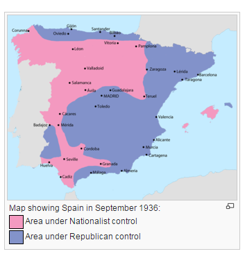
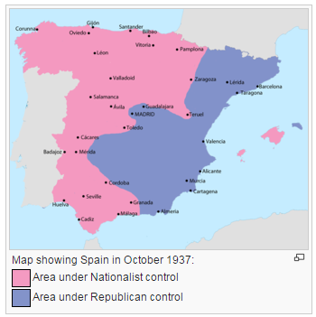
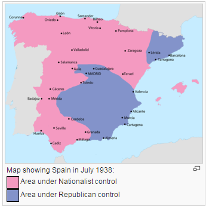
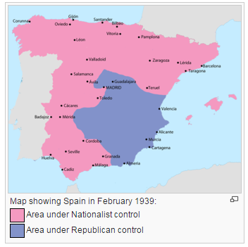

The Rise of Franco
the Spanish Civil War
 Miguel Primo de Rivera’s dictatorship was simply the start of the Catalan suppression because in 1936 a massive uprising lead by Spanish nationalist troops led by Fransisco Franco led to the start of the Spanish Civil War. While this conflict was short, 1936-1939, it led to the political future of Spain for the next 36 years. The sides of this war were split on political alignment; the Republicans, those loyal to a more democratic Spain, which Catalunya was a part of, and the Nationalists led By Francisco Franco. This Civil war was substantial due to the simple fact that each side had a substantial backing from world powers. The Republicans in Catalunya had the support of the Soviet Union while the Nationalist Party was supported by Nazy Germany, Fascist Italy, and their Portuguese neighbors.
 Franco’s uprising began in Morocco where is coup had been developed, and slowly the nationalists advanced from their strongholds in the South of Spain and in the West in Portugal. This advancement captured the majority of the northern Spanish coastline by 1937. In March of 1938 the nationalists began launching their Aragon offensive, pushing closer and closer to Catalunya through their direct neighbor. By the end 1938 Nationalists had conquered all but Central and South-Eastern Spain and the north-east in Catalunya.
 Just before the start of the year 1939, Franco launched his offensive against the Catalan region. With all of his forces centered on one, relatively small battlefield, Franco was able to conquer Catalunya by February of 1939. The destruction of Republican forces in Catalunya, where this spirit existed more than anywhere else in Spain at the time, led to the nationalist ability to occupy Madrid and declare victory.
The Spanish Civil War was the bloodiest episode of Catalan regional history as well as the history of Spain itself. Catalunya was the site of consistent bombiings and battles the likes of which many regions of the world have never seen, and begun one of the most oppressive dictatorships in Spanish history, that of Fransisco Franco.
 During his dictatorship Franco worked to suppress any political opposition he had faced during the Spanish Civil War. This included the Catalunya. Again, for the third time in its history, the first part of its regional identity that was made illegal was the Catalan Language and culture, its manner of unifying and expressing their difference from their nationally controlled government. What was also made illegal was their political autonomy, bringing Catalunya under the full control of the Franco Dictatorship. It was also during this time that thousands of activists in Catalunya were executed for forced into exile because of their vehement and boisterous opposition to the Franco regime in Spain. Catalunya had essentially entered the cultural and political dark ages while Franco controlled Spain.
Previous: Catalan Regionalist SentimentsNext: The Rise of CatalunyaMaps: Courtesy of Wikimedia Commons